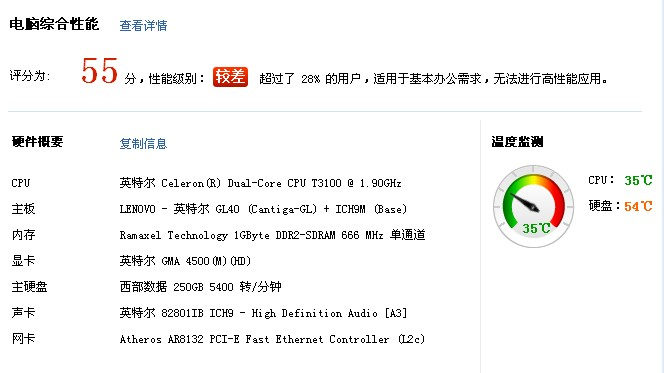

大家来SHOW一下自己下棋的装备
#1 大家来SHOW一下自己下棋的装备 作者：小丸.net 发表时间：2011-9-7 15:42:54
本人的：
硬件：IBM X60本本 U1300/2G内存/320G硬盘
软件：正版终结者2011（算防）
黑石头 3.8，3.7（算杀）
renlib 3.7英文版（算VCF/VCT 打谱）
谱量：500M左右
［ 屏蔽 于 2011-9-8 5:30:10 时花20金币送鲜花一朵］
#2 Re:大家来SHOW一下自己下棋的装备 作者：龍九囝 发表时间：2011-9-7 15:47:21
IBMT61 T8300 1G内存
黑石3.7 3.8 盗版终结者 08 少量用07
谱量50M（真的）
#3 Re:大家来SHOW一下自己下棋的装备 作者：菜包先生 发表时间：2011-9-7 16:12:17
台式组装，AMD Athlon(tm)II X4 640
Processor 3.00 GHz,
8G内存
黑石3.10
终结者2006
谱量：4G压缩包（全是垃圾，俺自己手工做的谱96KB ）
）
［此帖子已被 菜包先生 在 2011-9-7 16:53:24 编辑过］
#4 Re:大家来SHOW一下自己下棋的装备 作者：有志青年 发表时间：2011-9-7 16:29:17
黑石3.10
这是亮点，看来要歪楼
#5 Re:大家来SHOW一下自己下棋的装备 作者：砍 发表时间：2011-9-7 16:30:06
alienware m18x
Intel 酷睿i7 2720QM
处理器主频 2.8GHz
内存容量 8GB
硬盘容量 1500GB
屏幕尺寸 18.4英寸
显卡类型 高端独立显卡
黑石3.9 3.7
终结者2011 08破解版 07破解版 08正版
棋谱 200mb吧压缩后的
#6 Re:大家来SHOW一下自己下棋的装备 作者：小元 发表时间：2011-9-7 16:54:08
黑石3.10在国内还是很少的
#7 Re:大家来SHOW一下自己下棋的装备 作者：絕版賭徒 发表时间：2011-9-7 19:16:07
软件：正版终结者2008
一杆3.7
一杆3.10原装正版（还没用过）
谱量：网战不开谱
谱量不详
［ 极地剑客 于 2011-9-7 20:21:23 时花20金币送鲜花一朵］
#8 Re:大家来SHOW一下自己下棋的装备 作者：闫荣辉 发表时间：2011-9-7 19:35:24
硬件：HP6531S 2G内存、硬盘很大（160G电脑320G移动硬盘，PS：这个好像与下棋无关啊。）
软件：正版终结者2011、2008 黑石 3.7
有书3本、没谱、 自学，上网看不下。
［此帖子已被 闫荣辉 在 2011-9-7 19:40:18 编辑过］
#9 Re:大家来SHOW一下自己下棋的装备 作者：忧郁的双眼 发表时间：2011-9-7 19:39:42
CPU：Intel 酷睿i7 990X（CPU主频：3460MHz 六核心 十二线程）
内存：海盗船TW3X4G2000C9DF（2*2GB）
软件：正版终结者2009(一般开八个分别扫防） goro3.9（一般开四个） 红色黑石3.7 （一般开四个）
谱量：每个开局1.5GB
#10 Re:大家来SHOW一下自己下棋的装备 作者：极地剑客 发表时间：2011-9-7 19:44:59
硬件：2002年古董机 P3/128内存/80G硬盘软件：D版终结者07,08
黑石3.11
谱量：不太清楚....

［此帖子已被 极地剑客 在 2011-9-7 20:15:32 编辑过］
#11 Re:大家来SHOW一下自己下棋的装备 作者：忧郁的双眼 发表时间：2011-9-7 19:47:34
极地电脑里除了东热亚热S1还会有谱？表示怀疑~
#12 Re:大家来SHOW一下自己下棋的装备 作者：梧桐风 发表时间：2011-9-7 19:53:58
楼上V5、精辟#13 Re:大家来SHOW一下自己下棋的装备 作者：掌棋如烟 发表时间：2011-9-7 20:02:24
秀一下我现在在娘家用的05年买的古董机
［此帖子已被 掌棋如烟 在 2011-9-7 20:02:53 编辑过］
［ 极地剑客 于 2011-9-7 20:17:07 时花20金币送鲜花一朵］
#14 Re:大家来SHOW一下自己下棋的装备 作者：絕版賭徒 发表时间：2011-9-7 20:05:49
楼上，最好的装备应该是九指才对，哈哈
#15 Re:Re:大家来SHOW一下自己下棋的装备 作者：黄药师 发表时间：2011-9-7 20:11:06
引用：
原文由 忧郁的双眼 发表于 2011-9-7 19:39:42 :CPU：Intel 酷睿i7 990X（CPU主频：3460MHz 六核心 十二线程）
内存：海盗船TW3X4G2000C9DF（2*2GB）
软件：正版终结者2009(一般开八个分别扫防） goro3.9（一般开四个） 红色黑石3.7 （一般开四个）
谱量：每个开局1.5GB
谱量：每个开局1.5GB
goro3.9（一般开四个）这是什么啊？？？？
#16 Re:Re:大家来SHOW一下自己下棋的装备 作者：极地剑客 发表时间：2011-9-7 20:13:03
引用：
原文由 掌棋如烟 发表于 2011-9-7 20:02:24 :秀一下我现在在娘家用的05年买的古董机
不错~比俺电脑好多了~
［此帖子已被 掌棋如烟 在 2011-9-7 20:02:53 编辑过］
#17 Re:大家来SHOW一下自己下棋的装备 作者：魔铃 发表时间：2011-9-7 20:17:01
我的更实用
［ 4 于 2011-9-7 21:46:25 时花20金币送鲜花一朵］
#18 Re:大家来SHOW一下自己下棋的装备 作者：屏蔽 发表时间：2011-9-7 20:19:19
Dell N5010
Intel(R) Core(TM) i5 CPU M 480 @ 2.67GHz 2.66GHz
4.00GB
64位
其实除了内存以外我也不知道都是啥意思
自己的谱约20MB 乱七八糟的谱约400MB
软件：黑石3.7（基本不用） Renartist1.20（截图用） Renlib3.7 Renjuoffline（基本不用） Renjusolver2011
［ 极地剑客 于 2011-9-7 20:21:06 时花20金币送鲜花一朵］
#19 Re:Re:大家来SHOW一下自己下棋的装备 作者：小丸.net 发表时间：2011-9-7 20:20:39
引用：这位兄台还有钟的啊。。。。。能送个给我不。
原文由 魔铃 发表于 2011-9-7 20:17:01 :我的更实用
#20 Re:大家来SHOW一下自己下棋的装备 作者：魔铃 发表时间：2011-9-7 20:23:22
这个这个送起来多不吉利。。自己去买啦［ 小小亦默 于 2011-9-7 20:24:50 时花20金币送鲜花一朵］
［ 掌棋宣传员 于 2011-9-8 11:10:27 时花20金币送鲜花一朵］
［ 掌棋宣传员 于 2011-9-8 11:10:28 时花20金币送鲜花一朵］
［ 掌棋宣传员 于 2011-9-8 11:10:29 时花20金币送鲜花一朵］
［ 掌棋宣传员 于 2011-9-8 11:10:30 时花20金币送鲜花一朵］
［ 掌棋宣传员 于 2011-9-8 11:10:31 时花20金币送鲜花一朵］
［ 茗弈酒纹龙 于 2013-4-16 13:01:38 时花20金币送鲜花一朵］
#21 Re:大家来SHOW一下自己下棋的装备 作者：菜包先生 发表时间：2011-9-7 20:30:39
送终
#22 Re:大家来SHOW一下自己下棋的装备 作者：三国老凯 发表时间：2011-9-7 21:17:11
现在在网吧
回去秀一下我 07年的组装机 。。。10M的谱都 打不开。。
#23 Re:Re:大家来SHOW一下自己下棋的装备 作者：梧桐风 发表时间：2011-9-7 21:29:14
引用：吾有好多棋盘
原文由 魔铃 发表于 2011-9-7 20:17:01 :我的更实用
#24 Re:大家来SHOW一下自己下棋的装备 作者：离子阵阵雨 发表时间：2011-9-7 21:56:04
黑石3.7，f6，五子棋大师2，连珠终结者06/07/08，花月妙手打谱器，棋谱转换器，谱量我只知道我的幽雨花月地毯是174mb，幽雨浦月地毯两百多mb。。。。#25 Re:大家来SHOW一下自己下棋的装备 作者：aabb 发表时间：2011-9-7 23:26:56
黑石3.7、3.82，终结者06、08，五子棋大师2，F6，连珠番汉化版，showrenju，500M的谱。以前还有更多装备的，删掉好多好多了。
#26 Re:Re:大家来SHOW一下自己下棋的装备 作者：游戏人间 发表时间：2011-9-7 23:27:41
#27 Re:Re:Re:大家来SHOW一下自己下棋的装备 作者：极地剑客 发表时间：2011-9-7 23:31:08
引用：都可以做服务器了，话说现在ddr3内存真是白菜价
原文由 游戏人间 发表于 2011-9-7 23:27:41 :
#28 Re:大家来SHOW一下自己下棋的装备 作者：古尔丹 发表时间：2011-9-8 9:40:14
俺的棋盘！帅吧？［ 第五象限 于 2011-9-8 16:53:43 时花20金币送鲜花一朵］
#29 Re:大家来SHOW一下自己下棋的装备 作者：踵酃 发表时间：2011-9-8 10:09:55
 很帅, 很高级, 日本的名人是不是用这样的棋盘?
很帅, 很高级, 日本的名人是不是用这样的棋盘?
#30 Re:大家来SHOW一下自己下棋的装备 作者：小丸.net 发表时间：2011-9-8 10:18:00
#31 Re:大家来SHOW一下自己下棋的装备 作者：掌棋宣传员 发表时间：2011-9-8 11:03:03
#32 Re:大家来SHOW一下自己下棋的装备 作者：掌棋宣传员 发表时间：2011-9-8 11:07:54
新买的数码相机被带走拍孩子了,山寨手机拍的将就看吧~
#33 Re:大家来SHOW一下自己下棋的装备 作者：华夏使者 发表时间：2011-9-8 11:29:13
你这棋盘有点多余，直接在凉席上下就好了#34 Re:Re:大家来SHOW一下自己下棋的装备 作者：炫飞冰弦 发表时间：2011-9-8 12:02:11
引用：掰吧 反正吹牛不上税
原文由 忧郁的双眼 发表于 2011-9-7 19:39:42 :CPU：Intel 酷睿i7 990X（CPU主频：3460MHz 六核心 十二线程）
内存：海盗船TW3X4G2000C9DF（2*2GB）
软件：正版终结者2009(一般开八个分别扫防） goro3.9（一般开四个） 红色黑石3.7 （一般开四个）
谱量：每个开局1.5GB
#35 Re:大家来SHOW一下自己下棋的装备 作者：黑白之巅 发表时间：2011-9-8 14:25:50
还以为晒棋盘啥滴。。。。
#36 Re:大家来SHOW一下自己下棋的装备 作者：五子酷 发表时间：2011-9-8 16:08:56
我无电脑，无谱，无软件，无棋盘，上班的时候脑子去想着拆，省手省空间还不误事。
#37 Re:大家来SHOW一下自己下棋的装备 作者：拈棋居 发表时间：2011-9-9 3:24:58
零三年的机子，五一二内存，换了个电源后其他部位没换过。用零八终结者破解版，谱量：压缩后四十KB不到。一本五子棋书，一副围棋棋盘，一张自制五子棋棋盘。喜欢下快棋，欢迎有兴趣的棋友相约切磋。#38 Re:Re:Re:大家来SHOW一下自己下棋的装备 作者：忧郁的双眼 发表时间：2011-9-9 13:34:14
谁说我吹的，我这是随便装了台电脑，不就五六万嘛！#39 Re:大家来SHOW一下自己下棋的装备 作者：飞翔 发表时间：2011-9-9 14:59:04
丸子我回收 你的五子棋书
#40 Re:大家来SHOW一下自己下棋的装备 作者：过好今天 发表时间：2011-9-9 19:57:54
手机+人脑 纯脑流 呵呵#41 Re:大家来SHOW一下自己下棋的装备 作者：裁决殿雪月 发表时间：2011-9-12 13:02:50
AMD X2
4G内存
500G硬盘
盗版终结者2009
黑石3.7
棋谱压缩后293M（全是圾谱）
［ 极地剑客 于 2011-9-13 11:39:37 时花20金币送鲜花一朵］
#42 Re:大家来SHOW一下自己下棋的装备 作者：虚无 发表时间：2011-9-13 17:16:23
酷睿2 1.6#43 Re:大家来SHOW一下自己下棋的装备 作者：炫飞柳扶风 发表时间：2011-9-16 12:54:07
奔腾MMX120MHZ 32M的EDO内存 3G硬盘 12寸TFT屏幕,带一条线.光驱老划盘,软驱没有,USB接口没有,网卡需转接,暂时没有用.
型号FMV-5120 的. 居然爱五子棋打谱软件能用,就是有几个出错的对话框.黑石能运行.终结者没试 过.
PS:安装了windows 98 ,装了一些98下能用的中国象棋,国际象棋,小软件.围棋用手谈1,五子棋大师1和2都可以运行.
顺便求各类98下能用的小软件小游戏.
［此帖子已被 炫飞柳扶风 在 2011-9-16 12:57:39 编辑过］
［ 极地剑客 于 2011-9-16 20:10:03 时花20金币送鲜花一朵］
#44 Re:大家来SHOW一下自己下棋的装备 作者：炫飞☆冲四不挡 发表时间：2011-12-20 17:28:11
哈哈，都是网站选手嘛。我用一个不知道什么版本的终结者，杂七杂八的棋谱，随便下下。#45 Re:Re:大家来SHOW一下自己下棋的装备 作者：润土 发表时间：2011-12-20 23:13:05
引用：六核还发上来挨骂啊，我的直接核反应堆了。
原文由 忧郁的双眼 发表于 2011-9-7 19:39:42 :CPU：Intel 酷睿i7 990X（CPU主频：3460MHz 六核心 十二线程）
内存：海盗船TW3X4G2000C9DF（2*2GB）
软件：正版终结者2009(一般开八个分别扫防） goro3.9（一般开四个） 红色黑石3.7 （一般开四个）
谱量：每个开局1.5GB
#46 Re:大家来SHOW一下自己下棋的装备 作者：悠悠紫叶情 发表时间：2011-12-22 11:29:06
cpu XEON E3 1230 四核3.2G
内存 8G
软件 终结者2011，黑石3.7 3.8 3.9，
谱量，26开局总谱40M，流星2M，疏星60M，瑞星340M，斜月80M，松月90M，妖刀总谱40M。
#47 Re:忧郁的双眼【==Re:大家来SHOW一下自己下棋的装备==】 作者：珍惜你和我 发表时间：2012-2-21 8:00:57
引用：这个谱量吓人￥￥
原文由 忧郁的双眼 发表于 2011-9-7 19:39:42 :CPU：Intel 酷睿i7 990X（CPU主频：3460MHz 六核心 十二线程）
内存：海盗船TW3X4G2000C9DF（2*2GB）
软件：正版终结者2009(一般开八个分别扫防） goro3.9（一般开四个） 红色黑石3.7 （一般开四个）
谱量：每个开局1.5GB

#48 Re:小丸.net【==Re:大家来SHOW一下自己下棋的装备==】 作者：珍惜你和我 发表时间：2012-2-21 8:09:09
引用：我的妈呀
原文由 小丸.net 发表于 2011-9-8 10:18:00 :

#49 Re:大家来SHOW一下自己下棋的装备 作者：一尘 发表时间：2013-4-16 11:26:50
谱量不详#50 Re:大家来SHOW一下自己下棋的装备 作者：一尘 发表时间：2013-4-16 11:28:38
我靠 图怎么上传啊#51 Re:大家来SHOW一下自己下棋的装备 作者：一尘 发表时间：2013-4-16 11:32:20
i5 2450M 4G内存 2G显卡 08 09正版 黑石4.0（实际上是3.82）#52 Re:大家来SHOW一下自己下棋的装备 作者：冰雪笑醉 发表时间：2013-4-16 15:02:43
电脑内存2GB
2.50GHZ
破旧的电脑伤不起,内存太小的缘故,大的谱几乎打不开
破解版终结者2008 (每次至少开4个)
黑石头：3.7 +3.9(每次至少开两个或两个以上,根据情况而议,特殊情况开个9个.10个的)
谱库:.几个U盘都满了
#53 Re:大家来SHOW一下自己下棋的装备 作者：如火流年 发表时间：2013-4-16 18:13:02
香榧棋盘一枚，4.5公分厚。#54 Re:如火流年【==Re:大家来SHOW一下自己下棋的装备==】 作者：悟石 发表时间：2013-4-18 8:42:55
搞清楚了么？香榧不是这个价吧？#55 Re:大家来SHOW一下自己下棋的装备 作者：悟石 发表时间：2013-4-18 8:45:06
多半是新榧木#56 Re:大家来SHOW一下自己下棋的装备 作者：如火流年 发表时间：2013-4-18 11:08:57
虽然是网上买的但是到现在半年多依然是有很优雅的香味。棋盘有一点瑕疵但是的确是香榧。无所谓啦反正是自己用。。。#57 Re:大家来SHOW一下自己下棋的装备 作者：山城刀客 发表时间：2013-4-18 12:11:01
一.电脑配置：
[/dl.
电脑配置低，经常卡机死机。
二.打谱软件：
现在基本不用打谱软件了。
三.对战软件：
主要用黑石3.7 、3.9（均为盗版）；终结者2008破解版。
四.研究棋谱：
80%为自己研究。
#58 Re:大家来SHOW一下自己下棋的装备 作者：风雪花月 发表时间：2013-4-19 22:51:09
我的配置：人脑一个，人脑CPU,人脑内存，没有谱，纯人脑瞎算，不会用软件。下棋纯属娱乐，没有大伙这么专业。#59 Re:大家来SHOW一下自己下棋的装备 作者：臭棋居士 发表时间：2013-4-20 7:06:12
单核，1.86G处理器，